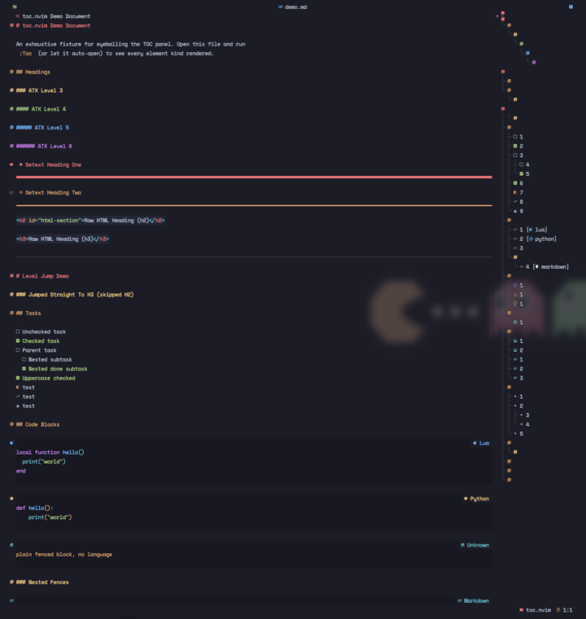
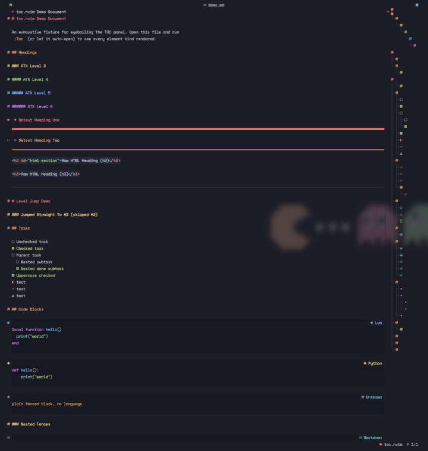
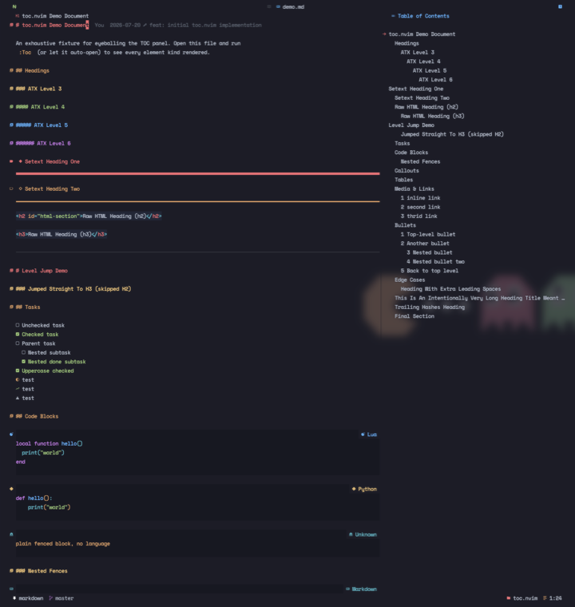
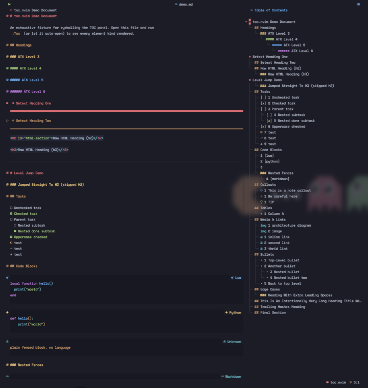

Neovim · v1.3.0
A table of contents that follows your cursor.
A live outline in a side split. Move in the panel, the document follows — and back.
{ "zerochae/toc.nvim", opts = {} }
GitHub
MIT · zero deps
boxed preset
Features
Two-way follow
Panel and document move together, beacon on jump.
Typed entries
Headings, tasks, code, callouts, tables, links, more.
Modes & presets
Five presets, four display modes.
Numbering
level, nested or flat.
Auto width
Fit the content, live-refresh on change.
Integrations
markview, devicons, treesitter — all optional.
Presets




Install
lua · lazy.nvim
{
"zerochae/toc.nvim",
ft = { "markdown", "help", "html", "org", "rst" },
dependencies = { -- all optional
"nvim-tree/nvim-web-devicons",
"OXY2DEV/markview.nvim",
"nvim-treesitter/nvim-treesitter",
},
keys = { { "<leader>t", "<cmd>Toc toggle<cr>" } },
opts = {},
}
Markdown and Vim help parse with no dependencies. A Nerd Font is needed for glyphs (except plain).
Configure
everything is optional
require("toc").setup { preset = "compact", -- compact|boxed|minimal|writing|plain width = "auto", -- or a column count numbers = "level", -- level|nested|flat|false max_level = nil, -- e.g. 2 hides below H2 }
positionleft or right split.
follow_cursorTOC drives the source.
auto_refreshlive, debounced, on save.
modeglyph + number + text.
:help toc.nvim for the full option list.
Usage
<CR>Jump & focus source.
oJump, stay in panel.
J / KNext / previous.
R · qRefresh · close.
Formats:
Markdown
Vim help
Org
reStructuredText
HTML treesitter